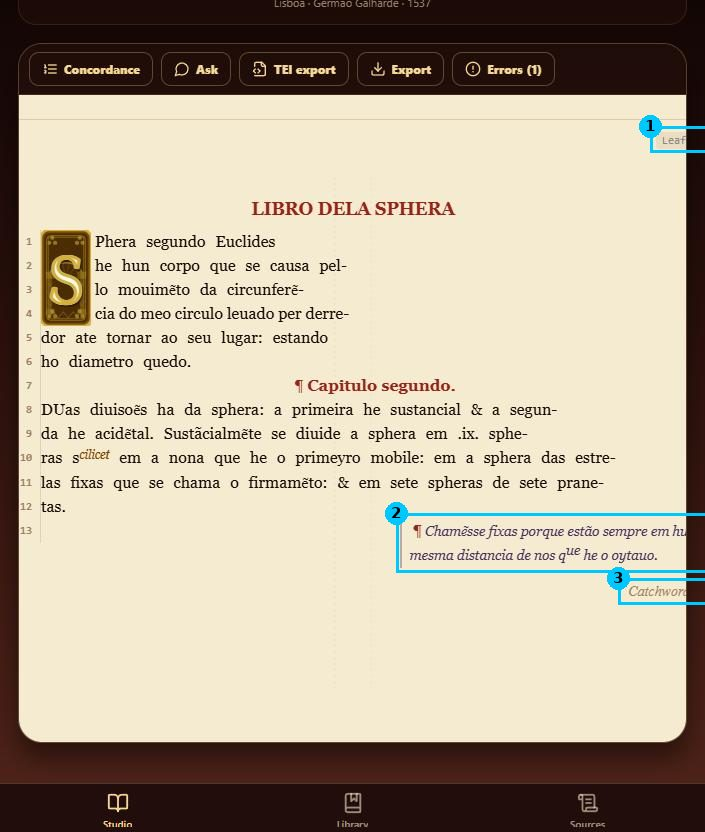
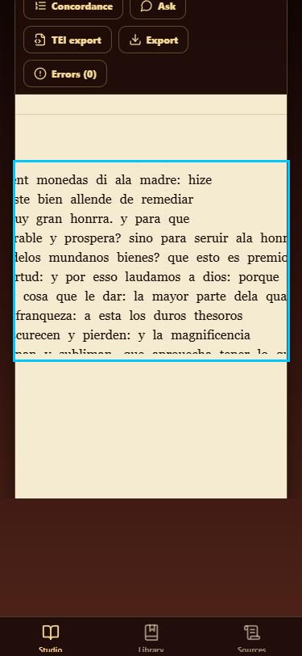

BrokenStudio · Parchment, reader and editor modes
1. The parchment is cut off below about 740 px
The folio has a fixed width inside a container with overflow-x: hidden (734 px of content in a 667 px box). Anything past the right edge can't be reached: the leaf label (1), the marginal gloss (2) and the catchword (3). On a 375 px phone the main text is also clipped on the left, and the page shows only about ten lines before blank space.
Fix: scale the folio to the container width (SVG viewBox or a CSS transform), so every element stays proportionate. Add pinch and zoom controls for close reading. If the page has to stay at native size, use horizontal scrolling with a visible edge shadow instead of hiding the overflow.

